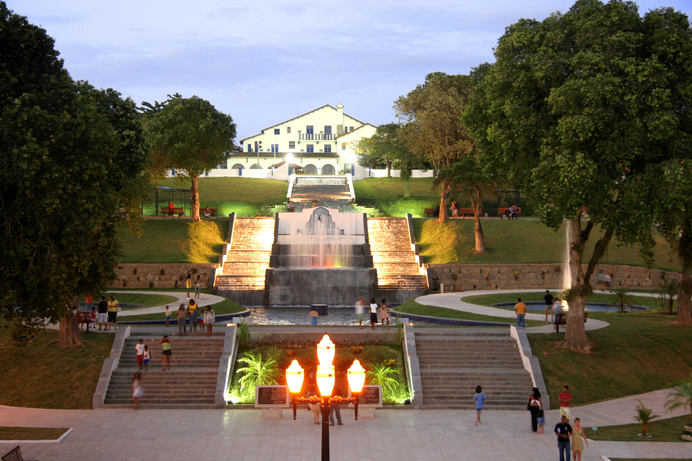

Saquarema: capital do Surf
Praia de Itaúna - Praia mais famosa de Saquarema, onde acontecem disputas nacionais e
internacionais de surf e bodyboarding. Seu mar de ondas perfeitas de cor azul esverdeado,
suas águas limpas e com bastante peixes, além de muito procurada pelos surfistas é muito
utilizada para pesca de vara e de mergulho, que é feito junto às pedras que se encontram nesta
praia. No canto direito da praia pode-se avistar a Igreja de Nossa Senhora de Nazaré, cartão
postal de Saquarema, que fica situada no alto morro.
Praia da Vila - Praia oceânica de águas azuis esverdeadas e limpas, normalmente com muitas ondas,
é considerada umas das melhores praias de Saquarema para surfar. Os surfistas estão sempre nesta
praia procurando as melhores ondas do pedaço. Esta praia é a predileta dos moradores, devido a sua
facilidade de acesso e proximidade da região central. As suas areias são claras e finas, nelas os
banhistas aproveitam para se bronzear, as suas águas não são muito propícias para banho por ser
um mar normalmente bravo.
CANAL - Lagoa de águas mornas, com tonalidade que varia de acordo com a luminosidade do dia.
Fica no centro, numa área de bastante movimento. Com vista da Igreja e do cemitério da cidade.
Fizeram uma ligação permanente entre a lagoa e o mar para que a regulação do sistema lagunar
seja feita com frequencia, a chamada Barra Franca, para a troca da água, e assim, deixá-la sempre
boa para pesca, uma importante fonte de renda de parte da população local.
IGREJA NOSSA SENHORA DE NAZARETH - É um dos cartões-postais da cidade. Conta-se que,
depois de uma violenta tempestade no ano de 1630, pescadores de Saquarema teriam encontrado
a imagem de Nossa Senhora de Nazareth, protetora dos navegantes, em uma rede de peixes. A
Igreja possui nave única e um corredor lateral junto da torre sineira. Ao fundo fica o Cemitério
Municipal.
MORRO DA CRUZ - O Mirante do Morro da Cruz possui vista espetacular, com um belo pôr do sol.
De lá podem ser apreciadas três das grandes lagoas que compõem a lagoa de Saquarema.
Também é possível admirar as serras da região. Onze serras fazem parte do município: Castelhana,
Tingui, Mato grosso, Catimbau, Espinhaço, Coqueiro, Redonda, Portelas, Amar e Querer, Boqueirão
e Palmital.
Araruama

ORLA DO CENTRO - É maior laguna hipersalina o mundo. Principl cartão postal da cidade. A orla fica situado entre o Km 106 da Rodovia Amaral Peixoto, com calçadão, ciclovia, quadra de volei, beach soccer e quiosque.
PRAÇA ANTONIO RAPOSO - É um complexo cultural e de lazer, sendo um dos principais pontos turísticos, formado pelo Teatro Municipal, Espaço do Artesão, Biblioteca Municipal e o Centro Cultural. É o principal centro de convivência de Araruama, onde ocorrem eventos culturais e comunitários. Além disso, a praça possui uma linda Igreja, a Nossa Senhora de Guadalupe recém-inaugurada e construída estrategicamente no alto da Praça sendo sua estrutura toda feita de vidro. Onde tb fica o parque João Hélio, onde encontramos esculturas que homenageiam o menino João Hélio.
SALINAS - As salinas da Lagoa de Araruama com seus icônicos moinhos fazem
parte da paisagem de quem se desloca na região dos lagos. Parte de um importante
ecossistema, a região das salinas não é apenas um local de subsistência
(sendo possível parar o carro e comprar sal diretamente nas salinas),
como um local de suma importância para vida natural da região. O roteiro é bastante
belo e pedagógico e emoldura cenários de fotos, ensaios e filmagens.
MUSEU DE ARARUAMA - Importante patrimônio arqueológico, constituído por cerca
de 20 sítios cadastrados. Com o objetivo de resgatar a valorização da cultura das
populações pré-coloniais, principalmente dos povos Tupinambás.
PARÓQUIA SÃO SEBASTIÃO - A paróquia de São Sebastião é um dos pontos
turísticos mais bonitos da cidade de Araruama. Fica no centro da cidade.Ela conta
com um pátio externo bem comprido repleto de coqueiros centenários. A paróquia é
bem bonita, contém uma decoração simples de Igreja de cidade pequena.
LARANJAL - No distrito de São Vicente encontramos varias plantações das laranjas
Folha Murcha.
LAGOA VERMELHA - A lagoa vermelha, situada entre Praia Seca (Araruama, RJ) e Vilatur (Saquarema, RJ),
possui potencial para banho medicinal devido sua alta concentração salina e a
presença de hidrogênio sulfuroso, recomendado no tratamento de doenças de pele e
reumáticas. Seu nome deriva da formação de algas de aparência avermelhada.
LAGOA DE JUTURNAÍBA - Na divisa com o município de Silva Jardim, distante 12,5 km do
centro de São Vicente de Paulo, 3º Distrito de Araruama, esta lagoa de água doce é r
esponsável pelo abastecimento de água potável de toda Região dos Lagos. Tem
aproximadamente 5 km de comprimento e 2,5 km de largura, com uma profundidade
média de 5,0 metros.
LAGOA DE PERNAMBUCANA - Situada na Restinga de Massambaba, é uma lagoa que
possui uma grande valorização paisagística
Iguaba Grande: a cidade ..
Capela de Nossa Senhora da Conceição - Lugar histórico bem conservado.
Uma igrejinha a beira mar, aonde ainda se celebrasse missas aos domingos.
Praia de Iguaba - É uma lagoa muito tranquila. Ótimo para as crianças brincarem.
O calçadão é bem asfaltado com ciclovia e espaço para caminhada. Ótima opção
para passear com a família.
São Pedro da Aldeia: a cidade ..
Igreja Matriz de São Pedro - ILinda igreja estilo barroco construida pelos jesuitas
em 1675 para catequizar os indios Hoje é tombada pelo Patrimônio histórico.
Balneário de São Pedro - Uma das muitas praias de lagoa da cidade mais histórica
da região, a Praia do Balneário é tranquila e serve bem a passeios. Como as praias
do entorno, poucos a utilizam para banho, apesar de afirmarem que as mesmas são
próprias ao banho.
Praia Linda - Localizada em um bairro residencial, a Praia Linda está cercada de
residências de veraneio, que fazem da mesma um lugar tranquilo.
Preferencialmente as famílias com crianças frequentam a praia, que é muito calma
e apresenta uma faixa de areia branca e fina.
Cabo Frio: a cidade ..
Igreja Matriz Nossa Senhora da Assumpção de Cabo Frio - A Igreja antiga é linda.
Vale a pena ser visitada. Lindas pinturas dos apóstolos, imagem magnífica de
N Sra da Assunção. Fácil acesso. Lugar que transmite muita paz.
Canal Itajurú - Para quem quer agito este lugar é interessante . Com bares,
restaurantes e clubes na beira do canal . Também de onde sai catamarãs para
passeios pela região . Barcos atracados dão um charme ao local.
Bairro da Passagem - É um lugar histórico , bem bucólico e cheio de visuais
incríveis do canal , além disso restaurantes e bares de ótima qualidade fazem
a região ficar ainda melhor.
Rua dos biquinis - Vale a pena conhecer a rua dos biquinis, que na verdade é um
shopping dedicado a roupas de banho. Lá você mas encontra muitas coisas legais:
biquinis, saídas de praia, rasteirinhas, bolsas de praia, etc
Mirante do Forte - A vista do Mirante é maravilhosa ... ótimo lugar para fotos e para
contemplar a natureza ... Do Mirante podemos ver a Ilha Do Japonês do lado esquerdo ...
Temos também o acesso ao barco táxi que faz a travessia para a Ilha.
Ilha do Japonês - É um dos locais mais procurados por aqueles que desejam um
recanto de tranquilidade na cidade. A ilha é um charmoso pedaço de floresta dentro
do canal do Itajuru, todo seu entorno em direção à Praia Brava.
Praia do Peró - A praia do Peró, localizada em Cabo Frio (RJ), é uma das mais
belas da Região dos Lagos. Contemplada por dunas e linda área verde, a atração
conquistou em 2018 a Bandeira Azul, certificação que atesta a qualidade da areia,
água, além da facilidade de acesso, mobilidade e segurança.
Búzios: a cidade ..


Orla Bardot - À beira da Praia da Armação, a Orla Bardot abraça os visitantes com
uma linda vista e clima extremamente bucólico. É lugar para passear calmamente,
apreciando a paisagem de barcos e casarões coloniais ao pôr do sol. Sente-se nos
banquinhos e veja a vida passar neste delicioso intervalo em meio à agitada vida de Búzios
Porto da Barra - O complexo de entretenimento localizado na Praia de Manguinhos atrai
pelo belo visual e pelos bons cardápios dos restaurantes. O local, construído à beira-mar,
oferece ambientes descolados e aconchegantes para quem deseja continuar curtindo
depois da praia.
Porto da Barra - O complexo de entretenimento localizado na Praia de Manguinhos atrai
pelo belo visual e pelos bons cardápios dos restaurantes. O local, construído à beira-mar,
oferece ambientes descolados e aconchegantes para quem deseja continuar curtindo
depois da praia.
Praia Brava - A bela paisagem do mirante na estrada que leva à Praia Brava já seria
motivo suficiente para atrair os turistas até lá, mas ela vai muito além e oferece um mar
maravilhoso, ambiente sempre tranquilo, areia vazia e dois dos mais elegantes bares à
beira-mar da cidade.
Praia da Azeda - A escadaria que leva à Praia da Azeda está entre os mais belos
visuais de Búzios. A Praia é pequena, charmosa e com mar calmo e colorido.
Praia da Ferradura - Oferece mar calmo e raso, pedalinhos, SUP, caiaque, cadeiras,
guarda-sóis e várias opções para refeição. Ou seja, tudo o que os pais precisam para
ir à praia com os pequenos.
Praia da Foca - Está localizada na estreita passagem entre dois paredões de rochas.
Essa formação faz com que ela tenha características únicas na cidade, por misturar
a violência do mar aberto com a calmaria da água que entra na enseada. Quando a
maré está alta, as pedras à beira da areia começam a formar deliciosas piscinas.
A Praia da Tartaruga - Se difere das outras localizadas no Centro de Búzios por não
ter casas ou hotéis obstruindo a paisagem para a natureza. Os quiosques, nos moldes
de antigamente, se integram ao cenário e dão à praia uma característica única na região.
Praia de Geribá - Ela está entre as mais populares e visitadas praias de Búzios.
Geribá é queridinha entre os turistas e moradores, especialmente por aqueles que
gostam de praia grande (são quase 2 km), muita areia, movimento e infraestrutura.
Praia de João Fernandes - O espetáculo começa ainda no topo do mirante que mostra
o belo mar da Praia de João Fernandes. Difícil não se encantar e descer até a areia.
As praias de João Fernandes e João Fernadinho são vizinhas e não há ligação
terrestre entre as duas. João Fernandes é o lado mais agitado, com restaurantes,
barraquinhas e faixa de areia mais longa.
Praia de Manguinhos - Não é tão famosa pela combinação de areia e mar, mas sim
pelo belo espetáculo de pôr do sol. A partir do cais do Porto da Barra, você poderá
apreciar um lindo entardecer, regado a boa comida, cerveja gelada ou um drink
digno do momento. O Porto da Barra é um complexo de entretenimento com lojinhas,
restaurantes e bares, muitos à beira-mar.
Praia dos Amores - Uma das mais escondidas praias de Búzios, a Praia dos Amores
é destino certo para quem deseja sossego, tranquilidade e exclusividade. O acesso
difícil — a partir de uma trilha de pedras na Praia do Canto — ajuda a manter o local
quase deserto. A Praia dos Amores está localizada em meio a um grande paredão de
rocha, com vegetação nativa. A praia é rodeada por formações rochosas que levam à
presença de algumas pequeninas praias, onde caberia apenas um casal. Um convite
a cenas de romantismo.
Arraial do Cabo: a cidade ..